Le chant des paraboles
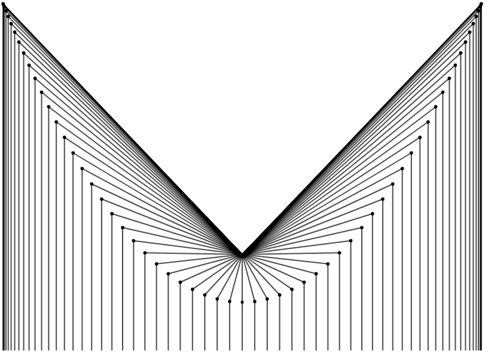élanger des idées mathématiques et des idées artistiques m’apporte beaucoup de joie, et conséquemment je suis toujours à la recherche de nouvelles expérimentations qui peuvent me permettre de me familiariser intuitivement avec divers concepts mathématiques. Il y a quelques semaines, j’ai regardé une vidéo YouTube de Toby Hendy, une éducatrice spécialisée en mathématiques et en physique. Elle y explique comment dessiner une parabole en utilisant une métaphore inspirée de Bob Ross, feu présentateur de l’émission de télévision The Joy of Painting.
Dans la métaphore d’Hendy, nous peignons un paysage qui contient un horizon, une montagne et un champignon situé près du sommet de la montagne.
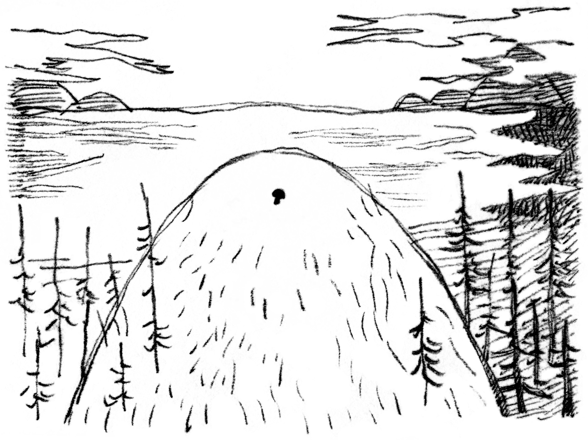Hendy explique qu’il nous est possible de définir spatialement le contour de la montagne en connaissant uniquement la position de l’horizon et celle du champignon. Elle dessine ensuite cette montagne avec projetant des lignes droites qui descendent verticalement de l’horizon et qui rejoignent des lignes projetées à divers angles depuis le champignon. Une parabole apparaît finalement aux endroits où se rejoignent ces lignes.
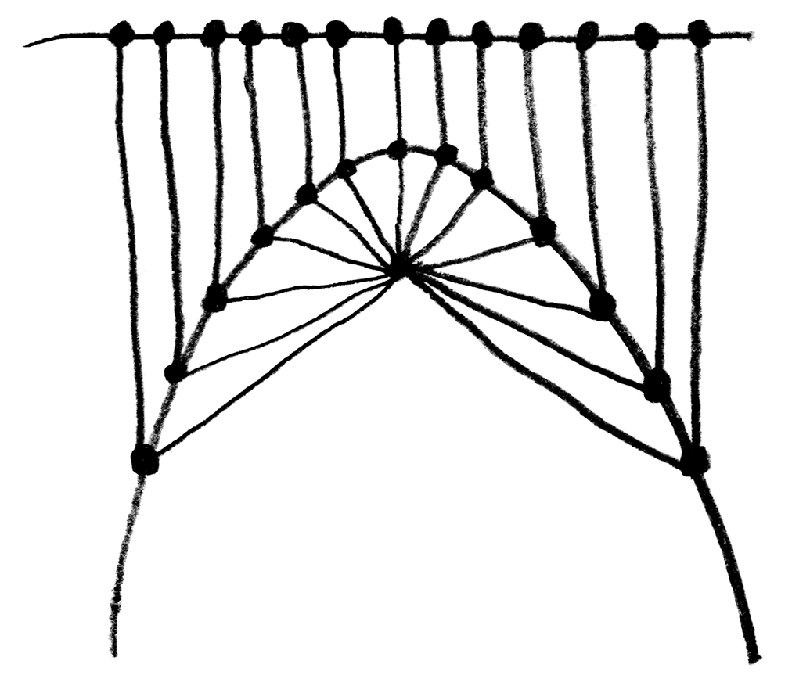En voyant cette parabole apparaître, je n’étais pas certain de comprendre exactement ce qui s’était passé. J’ai donc décidé de recréer cette expérience avec une animation programmée à l’aide de p5.js. Voici ce que j’ai obtenu : Vous pouvez consulter le code de cette animation dans l’éditeur Web p5.js.
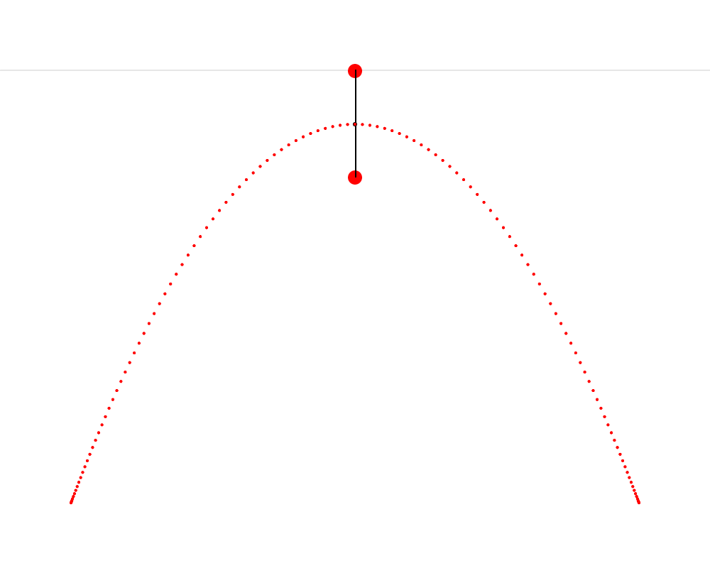Dans cette animation, nous voyons qu’il est possible de construire un triangle isocèle dont le premier sommet est situé sur une ligne d’horizon, le second sommet est situé près du haut de la montagne, Cet endroit où Hendy nous fait imaginer un champignon s’appelle le foyer de la parabole. Wikipédia décrit une parabole comme étant « une courbe plane dont chacun des points est situé à égale distance d’un point fixe, le foyer, et d’une droite fixe, la directrice. » On constate ainsi que le présent exercice nous fait répliquer très précisément cette définition. et le troisième sommet trace une parabole. J’ai aussi découpé ce triangle isocèle en deux triangles rectangles — je trouvais que cette coupe rendait plus claire la symétrie qui est présente dans le triangle isocèle et qui est ici très importante.
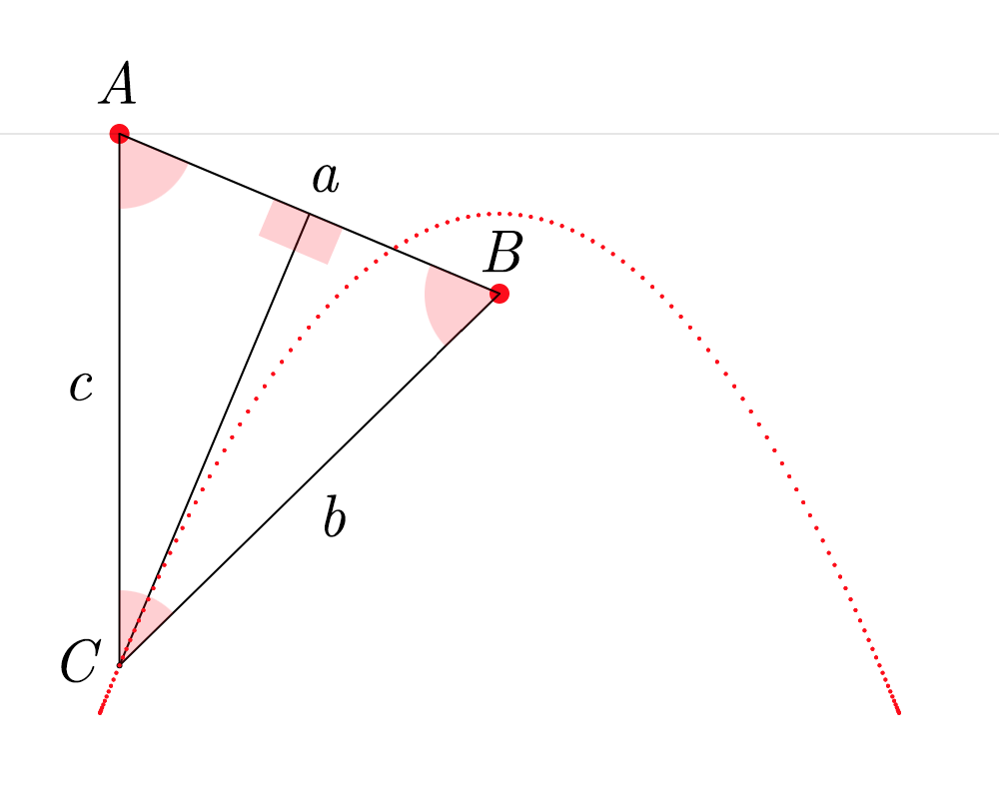Pour construire ce triangle ABC, il faut d’abord projeter une ligne verticale c vers le bas depuis le sommet A et une autre ligne a entre les sommets A et B. Ensuite, il faut calculer l’angle A et projeter une ligne b depuis le sommet B de façon à former un angle égal à A (pour que ABC soit isocèle). Les côtés b et c du triangle se croisent finalement au sommet C. Lorsque ce processus est répété en partant de plusieurs points sur la ligne d’horizon, les sommets C de tous les triangles obtenus forment une parabole.
Une visite impromptue au royaume des sons
Une des premières choses qui m’est venue à l’esprit après avoir dessiné une parabole était que je pouvais maintenant en créer une quantité infinie de copies et les considérer ensemble comme étant un signal, une onde parabolique.
J’ai tout de suite été curieux d’entendre cette onde. Puisque l’onde parabolique semble avoir des caractéristiques communes avec l’onde sinusoïdale et l’onde triangulaire (la courbe douce de l’une et l’angle acéré de l’autre), j’ai d’abord imaginé que sa sonorité semblerait être à mi-chemin entre ces deux ondes. L’onde parabolique ressemble aussi beaucoup à la valeur absolue d’une onde sinusoïdale, mais elle en est tout de même différente, comme on peut le voir ici. Mon intuition s’est avérée fausse.
Ci-dessous, vous pouvez écouter un fichier sonore qui contient trois notes : un la à 220 Hz joué avec une onde sinusoïdale, puis avec une onde parabolique, et finalement avec une onde triangulaire. On peut remarquer que l’onde parabolique, par sa sonorité, ne semble pas être à mi-chemin entre les deux autres ondes.
Ces trois notes ont été générées avec du code assez simple écrit dans SuperCollider. Le code que j’ai écrit pour obtenir l’onde parabolique est reproduit ci-dessous. Il n’est pas nécessaire de comprendre ce code pour comprendre ce qu’il fait. C’est très simple : on définit d’abord une valeur x qui grimpe de façon linéaire de -1 à 1, et ensuite une valeur y qui est égale au carré de la valeur x. Il s’agit de la façon la plus simple de représenter une parabole : y=x2.
(
{
var x, y, f = 1;
x = Phaser.ar(f * 0.5, 0) - 0.5 * 2;
y = x * x - 0.5 * 2;
}.plot(2);
)La mystérieuse apparition d’une onde triangulaire
Après avoir entendu le son de l’onde parabolique, j’ai cherché sur Internet pour trouver des informations la concernant. J’ai trouvé une section d’un livre de Miller Puckette (le créateur de Pure Data et de Max/Msp) qui traite en détail des ondes paraboliques. Puckette utilise une équation pour calculer une onde parabolique sur une période allant de 0 à N qui est formulée différemment de la solution que j’ai écrite avec SuperCollider, mais qui donne des résultats similaires : p[n]=12(nN−12)2−124 Ici, nous pouvons considérer nN comme étant la composante x : il s’agit d’une montée linaire entre 0 et 1 (autrement dit, c’est un signal en dents de scie), qui est ensuite mis au carré après avoir été placé sur l’intervalle [−12,12]. Notons que Puckette n’ajuste pas son onde parabolique pour quelle soit centrée visuellement sur l’axe vertical, comme je l’ai fait. Il explique la raison du décentrage vertical de son onde : « la composante DC (courant direct) est ainsi à zéro (en d’autres termes, la valeur moyenne d’un cycle de l’onde est de zéro) ». Ce choix a beaucoup de sens : il assure que cette onde produise un courant continu. Je n’y avais définitivement pas pensé lorsque j’ai écrit ma propre onde parabolique.
Un point soulevé par Puckette m’a particulièrement fasciné : la courbe à mi-chemin entre deux ondes paraboliques dont la phase et le signe sont inversés est une onde triangulaire. Il visualise ce phénomène dans son livre, mais j’ai pensé qu’une animation me permettrait de comprendre ce point de façon plus satisfisante. J’ai donc fait un autre croquis à l’aide de p5.js :
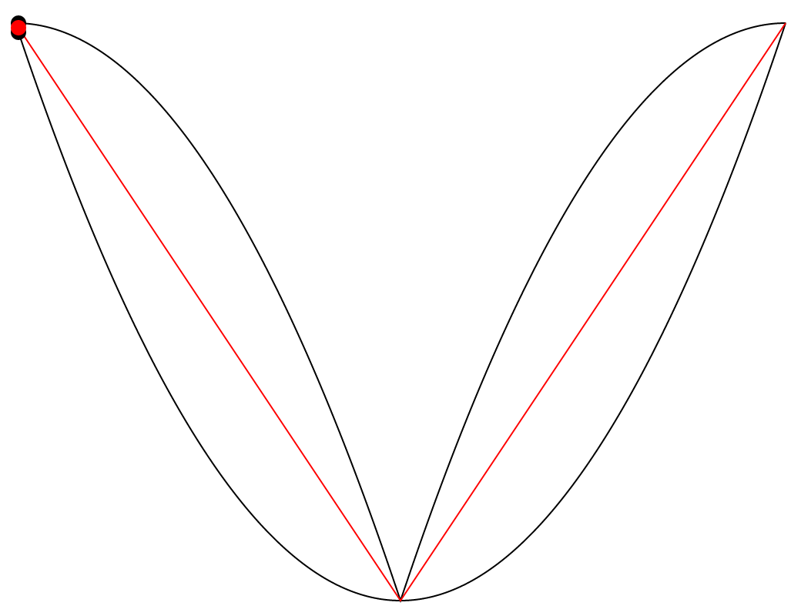Cette animation présente deux courbes noires (deux ondes paraboliques dont la phase et le signe sont inversés) et une courbe rouge située entre elles. J’ai trouvé fascinant de remarquer que la courbe rouge est toujours très exactement à mi-chemin entre les deux courbes noires, sur l’axe vertical. Le phénomène me semblait assez visuellement contre-intuitif, et j’ai donc ajouté un axe vertical qui se déplace le long des trois courbes afin de clarifier cette observation. Il est facile de remarquer que les deux lignes verticales qui sont projetées du point rouge, une vers le haut et l’autre vers le bas, sont toujours d’une longueur égale.
J’ai aussi eu l’idée de créer une nouvelle version de cette animation dans laquelle le système entier est stabilisé sur la courbe rouge. J’entends ainsi que la courbe rouge a été transformée en ligne droite en divisant chacune de ses valeurs par elles-mêmes. (Ainsi, chacune de ses valeurs devient 1 ; c’est donc un signal plat). Les valeurs des courbes noires ont ensuite subi la même transformation : elles ont été divisées par les valeurs originales de la courbe rouge. Pour rendre cette transformation plus facile à saisir, voici une animation qui nous fait osciller lentement entre les deux états du système (l’état original et la stabilisation sur la courbe rouge) :
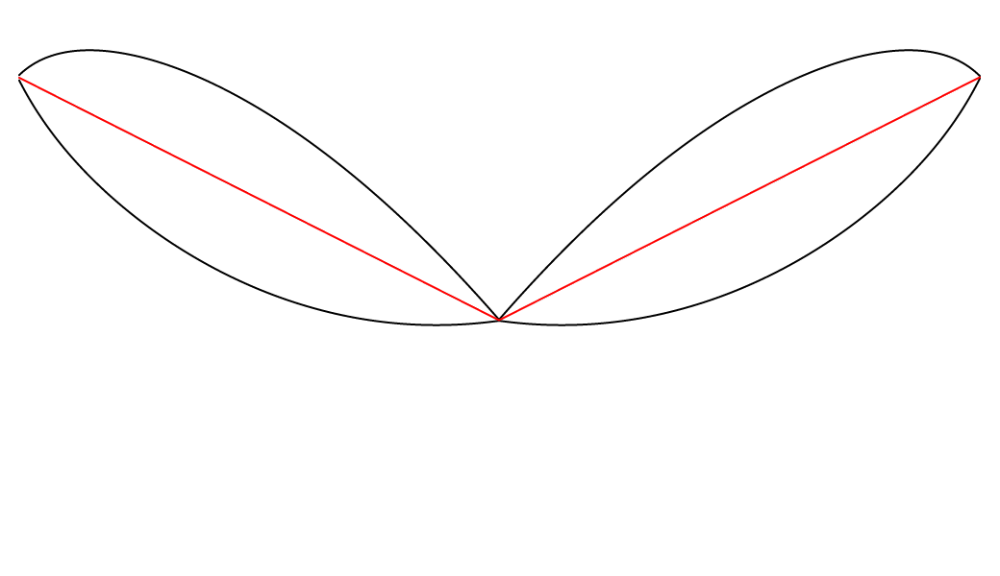Et ci-dessous, on peut voir le système lorsque la transformation est terminée.
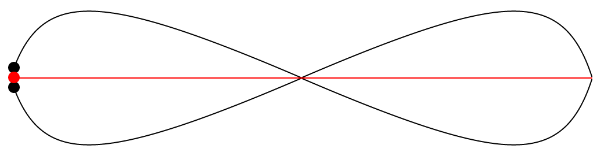Il est intéressant de voir que suite à cette transformation, les deux courbes noires sont maintenant parfaitement symétriques sur l’axe formé par la courbe rouge. Les deux courbes noires ressemblent aussi à une lemniscate, mais je ne suis pas certain que la définition d’une lemniscate soit vraiment respectée. Cela implique-t-il que ces courbes étaient déjà symétriques, d’une certaine façon, avant même la transformation, et que cette symétrie n’était simplement pas apparente ? Dans tous les cas, il est maintenant très clair que les deux courbes noires sont équidistantes à la courbe rouge.
Une autre onde
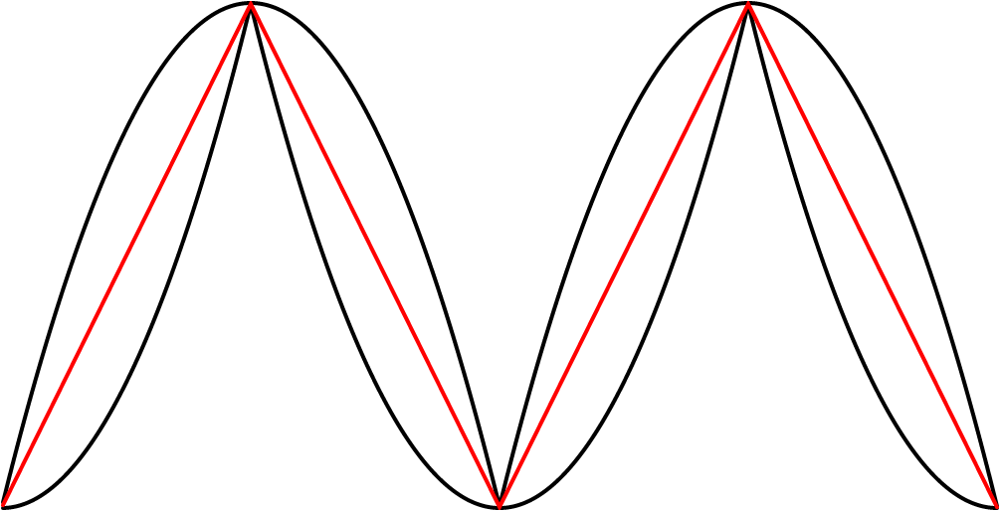a première observation, à la vue du système stabilisé, était qu’il peut être interprété visuellement de deux façons différentes : on peut choisir d’y voir deux courbes noires situées chacune en haut et en bas de la courbe rouge, ou alors on peut y voir deux courbes noires qui se croisent ensemble au centre horizontal de la ligne rouge. Si l’on considère le second scénario, les deux courbes noires croisées forment chacune une onde qui rappelle un peu une onde sinusoïdale, mais qui est curieusement inclinée. J’ai été immédiatement curieux d’entendre le son de cette onde inclinée. Je l’ai obtenue dans SuperCollider en multipliant les valeurs de la première courbe noire (celle qui est située au-dessus de la courbe rouge, de tout son long) avec les valeurs d’un signal carré. Ci-dessous, nous pouvons voir que la valeur du signal carré b est toujours égale à −1 ou à 1, et qu’ainsi, la multiplication avec le signal b a pour effet de miroiter l’onde a.
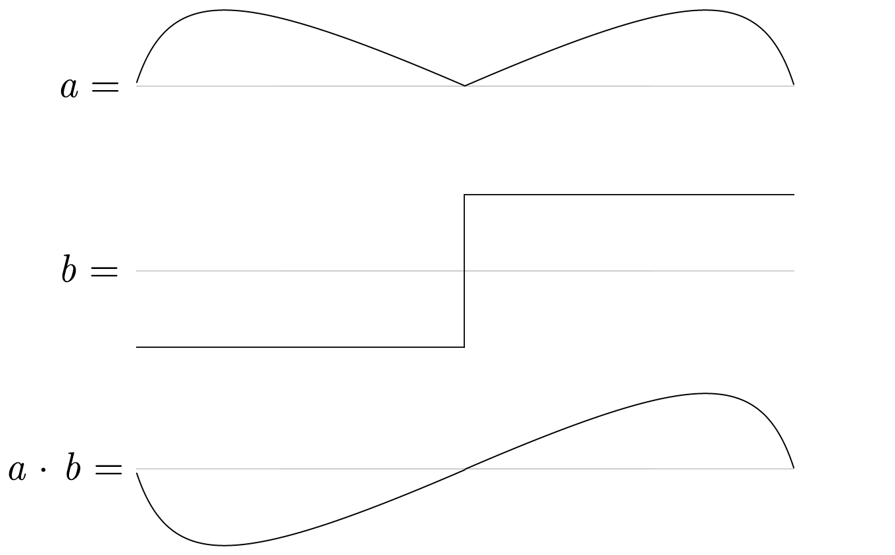Il suffit ensuite de créer des copies de ce signal a⋅b pour obtenir l’onde inclinée.
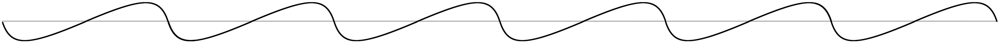Comme nous pouvons l’entendre, et comme nous pouvions l’imaginer en voyant sa forme, le son de cette nouvelle onde est beaucoup plus semblable à l’onde sinusoïdale que l’était l’onde parabolique. Voici le code SuperCollider avec lequel j’ai obtenu cette onde (ce code ne fait que reproduire les idées que j’ai déjà expliquées visuellement) :
(
{
var x1, x2, y1, y2, y3, ph, f = 1;
x1 = Phaser.ar(f * 0.5, 0) - 0.5 * 2;
y1 = x1 * x1 - 0.5 * 2;
x2 = Phaser.ar(f * 0.25, 1) - 0.5 * 2;
y2 = x2 * x2 - 0.5 * -2;
y3 = y1 + (0.5 * (y2 - y1));
ph = Phaser.ar(f * 0.5, 0).round -1 * 2 + 1;
y2 * y3 * ph - ph;
}.plot(2);
)Conclusion
Cette première plongée parmi les paraboles me rend très curieux d’en apprendre davantage sur cette courbe. Les paraboles possèdent certainement de nombreuses autres caractéristiques qui pourraient mener à de nouvelles expérimentations. Par exemple, cette animation fascinante par Matt Henderson illustre comment une parabole préserve sa forme lorsqu’elle subit une transvection.
D’ici les prochaines expérimentations, j’espère que vous avez apprécié ce sinueux chemin parmi quelques idées inspirées de la belle et humble expression y=x2.